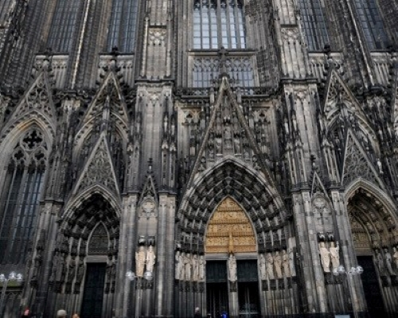

쾰른 대성당
Cologne Cathedral
- 
주소
정보
꿀팁
교통
운영 시간
입장료
Domkloster 4, 50667 Köln, 독일
독일에서 사장 잘 알려진 건축물이자 서유럽을 대표하는
종교 건축물 중에 하나인 성당이다.
동방박사의 유해가 보존되어 있다고 전해지고 그 외에도
서양 중세 건축사에 중요한 위치를 차지하는 건축물과
유물이 보관 되어 있다. 1996년 유네스코 세계문화유산
으로 등록되었다.
성당에서 특히 깊은 인상을 주는 것은 바로 성당을 가득
채운 스테인드글라스이다. 그 중에서도 바이에른 창,
리히터 창이 유명하다.
쾰른 중앙역 도착 후 광장 바로 앞으로 나오면 도착!
나머지는 홈페이지 참고
지하철
현재는 예배와 기도만을 위해 개장
매일 6:00~20:00
무료